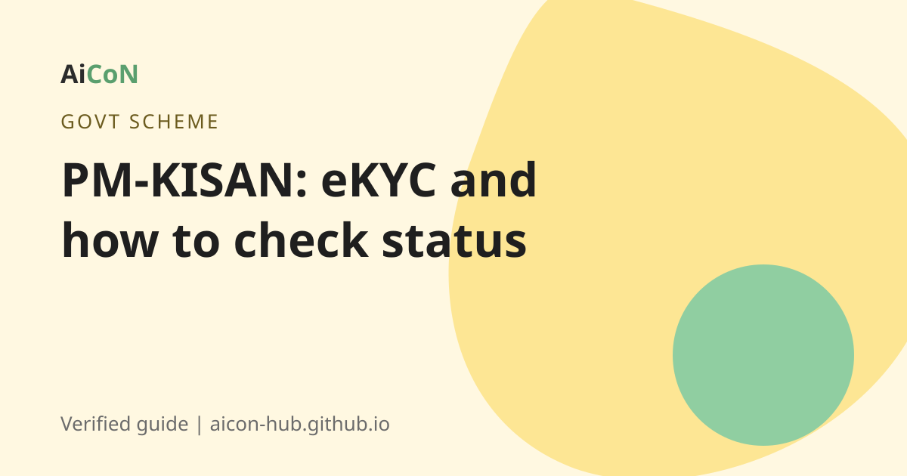

PM-KISAN: Rs 6,000 a year for farmers, eKYC and how to check your status
PM-KISAN gives eligible farmer families Rs 6,000 a year in three instalments of Rs 2,000. If you skip eKYC, payments can stop. The 23rd instalment was released on 20 June 2026.

What is PM-KISAN?
Pradhan Mantri Kisan Samman Nidhi (PM-KISAN) is a Government of India income support scheme. Eligible farmers get Rs 2,000 every four months, which makes Rs 6,000 a year in three equal instalments. The money goes straight to the bank account.
Who gets it?
Media reports quoting the scheme say money goes to farmers whose land details are in the PM-KISAN portal, whose bank account is linked with Aadhaar, and who have completed eKYC. The official site states that eKYC is mandatory for registered farmers.
How to do eKYC
- Open the official portal pmkisan.gov.in or the PM-KISAN mobile app.
- Find the eKYC option and enter your Aadhaar number.
- Enter the OTP sent to your Aadhaar-linked mobile.
- If OTP does not work, go to a Common Service Centre (CSC). The portal says biometric (fingerprint) eKYC is available through CSC login, the PM-KISAN mobile app and state-authorised users.
In Kerala, Akshaya centres work as CSCs. Ask the staff to help you.
How to check your status
- Open pmkisan.gov.in.
- Choose "Know Your Status".
- Enter your registration number and the captcha.
- Read the status. It shows if the payment is pending, for what reason, and if eKYC is needed.
Forgot your registration number? The portal has an option to find it using your mobile number. The beneficiary list for your village is also on the portal.
If your payment did not come
- Check eKYC first. It is the most common reason.
- Check that your bank account is linked with Aadhaar.
- Check that your land details are correct with your agriculture office.
- Contact your local agriculture office or CSC.
Cost, eligibility and limits
| Cost | Free. No fee for registration or eKYC. |
|---|---|
| Benefit | Rs 6,000 a year in three instalments of Rs 2,000. |
| Who | Landholding farmer families that meet the scheme rules. |
| Limits | Some people are excluded under the scheme rules. Check the portal for the exclusion list. |
Stay safe
- Fake websites copy the PM-KISAN portal. Use only pmkisan.gov.in.
- Nobody can charge you for registration or eKYC.
- Do not share your OTP with callers.
Frequently asked questions
How much does PM-KISAN pay?
Rs 6,000 a year in three instalments of Rs 2,000.
Which instalment is latest?
The 23rd, released on 20 June 2026, according to the official site. Check the site for newer ones.
Is eKYC compulsory?
Yes, according to the official portal.
Where can I do eKYC?
Online with OTP on the portal or app, or with fingerprint at a CSC.
Does Kerala have it?
Yes. It is a central scheme for farmers across India.
Sources: PM-KISAN portal, PIB: 23rd instalment, Economic Times, 20 June 2026. Checked 6 October 2026.